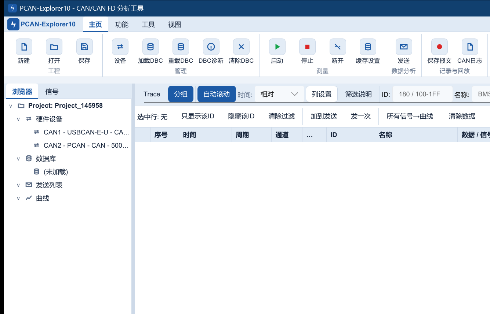
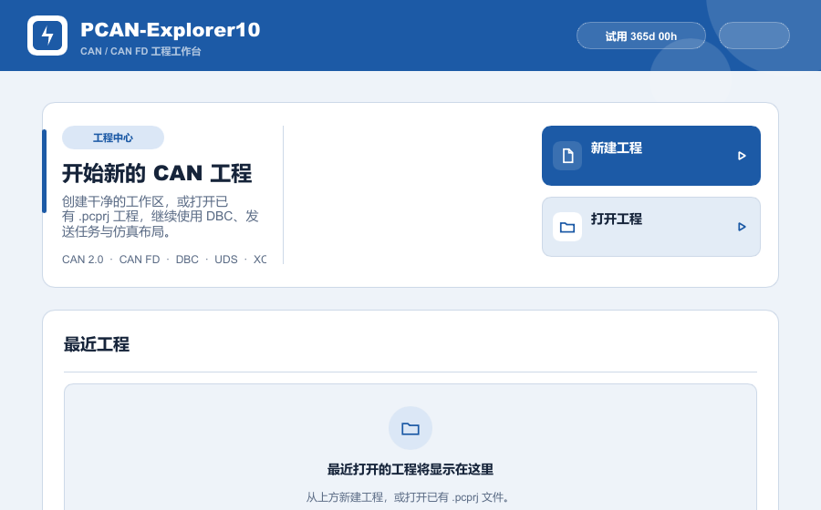
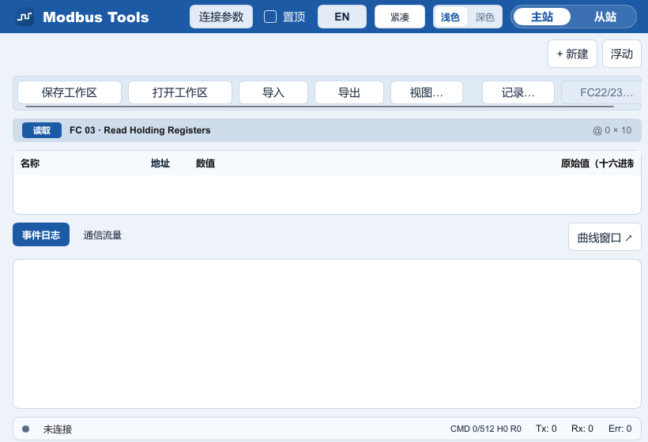
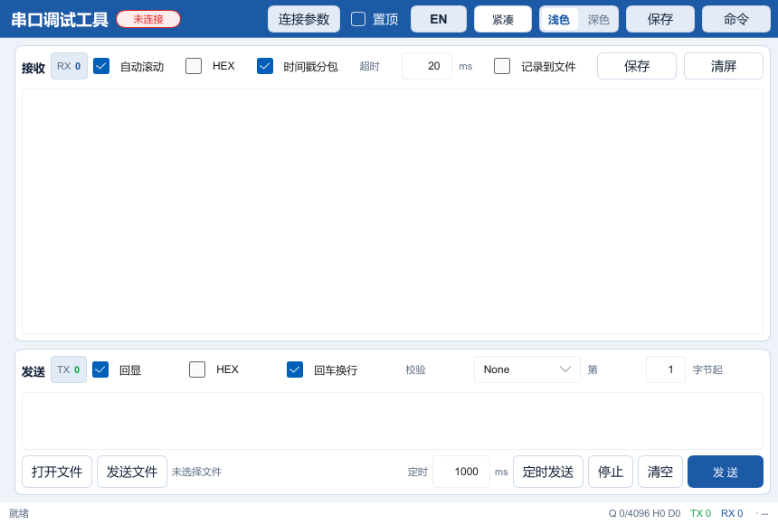

CAN / CAN FD 报文分析
Trace、分组、过滤、变化高亮、错误帧、统计、总线状态以及单次和周期发送。
面向汽车电子、储能、充电设备与工业通信研发，将硬件通道、DBC、报文收发、记录回放、曲线、仿真与诊断资产组织在同一工程中。

从连接硬件到复盘问题，常用动作保持在一个项目上下文中，减少配置重复和数据割裂。
Trace、分组、过滤、变化高亮、错误帧、统计、总线状态以及单次和周期发送。
Unsigned、Signed、IEEE Float、IEEE Double，支持 Intel / Motorola、factor、offset、单位与范围。
CSV、ASC、BLF 数据留痕与回放，多信号实时曲线用于状态观察和问题复现。
将指示灯、数值、进度、仪表、按钮、开关和滑块绑定 DBC 信号，形成可复用测试面板。
printf-over-CAN 文本日志与 UDS / XCP 工具入口，覆盖启动日志、状态监控和诊断操作。
Modbus TCP / RTU 主从站、寄存器视图和流量监控，以及普通串口调试与 ANSI 终端。
工程文件保存通道、DBC、发送任务与仿真布局，便于重复测试和团队交接。
扫描适配器，选择 CAN / CAN FD 通道与波特率。
关联一个或多个 DBC，建立报文与信号语义。
过滤、曲线、发送任务和仿真面板协同运行。
保存报文文件，脱离现场后继续定位与验证。
以下均为软件实际渲染结果，不使用概念图或生成式界面。



Modbus 与串口工具可以单独启动，语言、主题、置顶、授权与升级逻辑保持一致。
覆盖 TCP / RTU 主站轮询、写入、从站仿真、寄存器编辑、事件日志和通信流量。
支持多种编码、HEX、时间戳、文件收发、定时发送、长日志缓存与 ANSI 交互终端。
真实 CAN / CAN FD 收发需要兼容硬件及相应厂商驱动；可用通道能力以具体设备型号为准。
| 厂商 / 接口 | 软件接入 | 适用说明 |
|---|---|---|
| PCAN（PEAK） | 已支持 | PCAN-Basic 原生接口，CAN / CAN FD 能力取决于设备型号。 |
| ZLG 致远电子 | 已支持 | 集成 ZLGCAN 运行库与常用 USB CAN / CAN FD 设备定义。 |
| ZHCX 创芯科技 | 已支持 | 通过 ControlCAN 兼容接口完成设备与通道接入。 |
| GCAN 广成科技 | 已支持 | 集成 ECanVci / USB 通道运行库。 |
Windows 10/11 64 位安装包，包含主程序、Modbus Tools 与 Serial Tool。
明确硬件、驱动、数据文件和安装包校验要求。
工程、DBC、界面、配置和离线数据等功能可以打开使用；真实报文采集与发送需要兼容硬件和厂商驱动，当前版本不提供虚拟 CAN 总线。
支持 Unsigned、Signed、IEEE Float、IEEE Double，支持 Intel / Motorola 字节序以及 factor、offset、单位和范围。
对安装包计算 SHA-256，应得到 508F3506C1F6F38E79973D2184DE958A8892C6479E8A84A301CA1A4022224A93。
新增并重构运行诊断面板，统一诊断和升级弹窗的视觉与交互，修正状态栏布局和边界问题，并适配 Rust 1.95 静态检查。